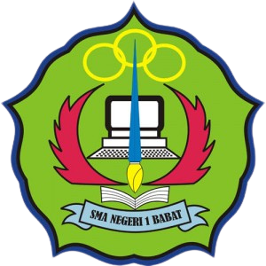
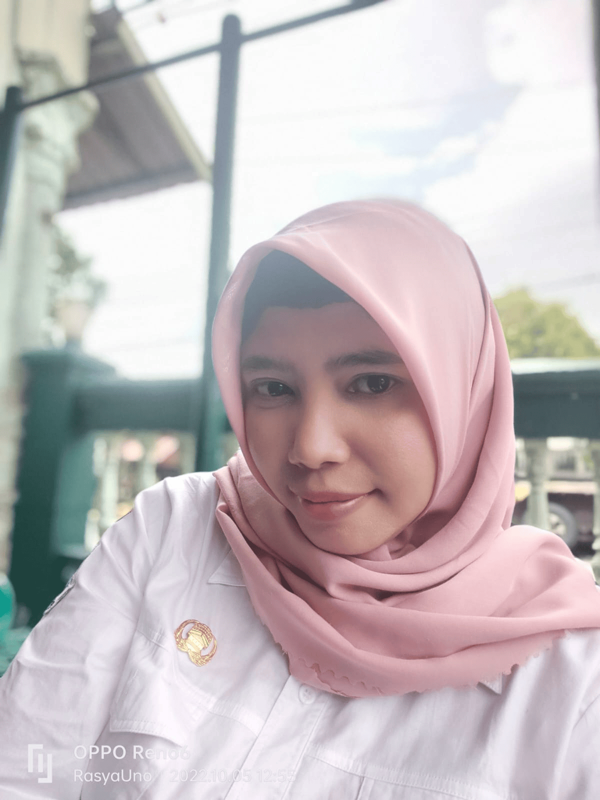

Sub unit: Mengenal dan Meningkatkan Daya Juang (AQ). Isi identitasmu untuk memulai sesi belajar interaktif ini.

Capaian Layanan Bimbingan dan Konseling Fase F menekankan pada pencapaian kematangan emosi, resiliensi diri, dan pemecahan masalah kehidupan. Setelah mempelajari materi ini, peserta didik diharapkan mampu:
Istilah Adversity Quotient (AQ) pertama kali dipopulerkan oleh Paul G. Stoltz pada tahun 1997. AQ secara sederhana dapat diartikan sebagai "Kecerdasan Menghadapi Kesulitan". Jika IQ adalah kecerdasan intelektual dan EQ adalah kecerdasan emosional, maka AQ adalah daya tahan mental atau daya juang seseorang saat menghadapi masalah, rintangan, maupun kegagalan.
Dalam kehidupan yang penuh ketidakpastian, mengandalkan kepintaran otak (IQ) saja tidaklah cukup. Banyak orang yang cerdas secara akademik gagal meraih kesuksesan di dunia nyata karena mereka mudah menyerah saat keadaan tidak berjalan sesuai rencana.
AQ sangat penting karena:
Paul G. Stoltz menggunakan analogi orang yang mendaki sebuah gunung besar (kesuksesan) untuk membedakan respon seseorang terhadap rintangan. Ia membaginya menjadi tiga kelompok utama, yaitu:
Tipe Quitters adalah kelompok orang yang menghindari tantangan. Saat dihadapkan pada kesulitan sekecil apa pun, mereka lebih memilih mundur, melarikan diri, atau menyalahkan keadaan dan orang lain.
Karakteristik:
Tipe Campers adalah mereka yang mau memulai pendakian, berusaha mencapai target tertentu, namun memutuskan berhenti di zona nyaman dan mendirikan kemah. Mereka merasa pencapaiannya saat ini sudah cukup dan enggan berjuang lebih keras lagi.
Karakteristik:
Tipe Climbers adalah para pejuang sejati. Mereka mendedikasikan hidupnya untuk terus mendaki tak peduli seberapa terjal jalannya, badai yang menerpa, atau kegagalan yang terjadi di sepanjang perjalanan.
Karakteristik:
Bagaimana kita mengukur dan melatih AQ? Gunakan keempat dimensi CORE berikut:
Tidak ada yang dilahirkan langsung menjadi Climber. Kecerdasan adversitas dapat dilatih layaknya otot. Berikut adalah langkah praktisnya:
Kuis ini terdiri dari 5 soal pilihan ganda, masing-masing dengan 5 opsi jawaban (A–E). Jawablah seluruh soal, lalu klik Selesai & Lihat Nilai untuk melihat skor beserta koreksi jawabanmu.
Tuliskan refleksimu setelah mempelajari sub unit ini. Dapat dicetak menjadi PDF sebagai bukti belajar mandiri / portofolio Bimbingan Konseling.

Media pembelajaran interaktif ini dikembangkan untuk memfasilitasi layanan Bimbingan dan Konseling di sekolah. Tujuannya adalah membantu peserta didik memahami pentingnya daya juang (Adversity Quotient) serta menumbuhkan mental yang tangguh dalam menghadapi permasalahan akademik dan kehidupan sosial.
| Nama Murid | : |
| Asal Sekolah | : |
| Tanggal | : |